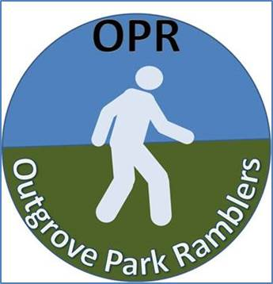

s
|
 |
OUTGROVE PARK RAMBLERS |
|
|
SCHEDULE |
||
|
Saturday Travel from
Outgrove to St Dogmaels in Pembrokeshire Sunday Walk from
St Dogmaels to Newport Distance 25
kilometres Monday Walk from
Fishguard to Pwll Deri Distance 15
kilometres Tuesday Walk from
Porthgain to Whitesands Distance 16
kilometres Wednesday Walk from
Solva to Broad Haven Distance 20
kilometres Thursday Walk from
Martin’s Haven to Dale Distance 16
kilometres Trip to see
Carew Castle Friday Walk from
Neyland to Angle Distance 26
kilometres Saturday Walk from
Angle to Freshwater West Distance 16
kilometres Sunday Walk from
Skrinkle to Amroth
Return to
Outgrove Park |
|||